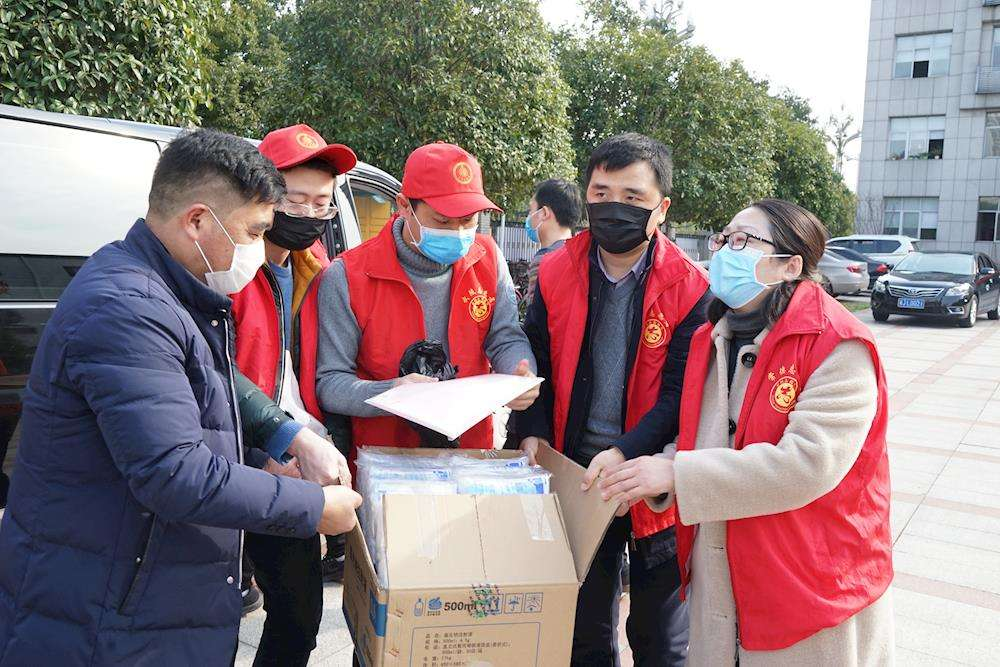

英雄，是志愿者
黑龙江的“奶茶姐”、河南的“萝卜哥”、四川的“大树哥”……网友们喜欢用亲切的绰号，为这些凡人善举点赞加油。在抗疫英雄谱中，他们有一个共同的名字——志愿者
从1月20日至3月4日，全国各地开展志愿服务项目超过9.3万个，参加服务的注册志愿者超过207万人，记录志愿服务时间达6419万小时。还有很多无名志愿者没有被注册，但他们的爱与奉献却被铭记。
点点微光，也能铺就满天星河。灿烂星空，你是真的英雄。